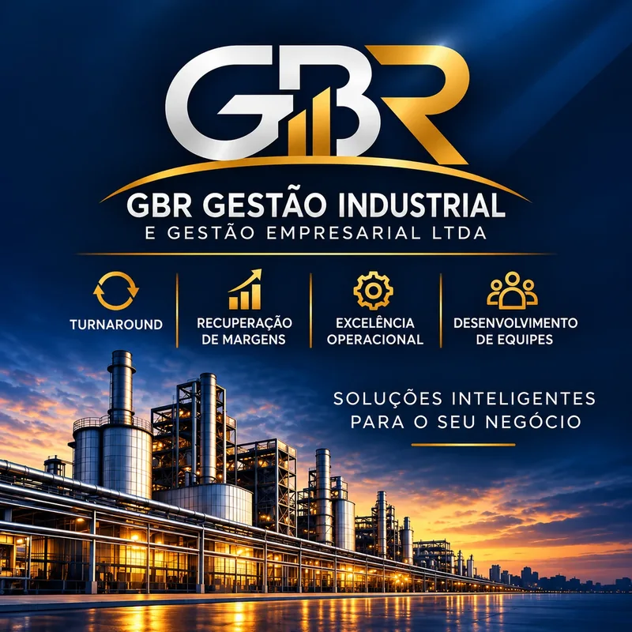

Turnaround industrial
Reorganização de operações de baixa performance, com foco na estruturação de processos e na profissionalização da gestão.
PLANEJAMENTO · PROCESSOS · PERFORMANCE
Turnaround, recuperação de margens e excelência operacional. Uma atuação integrada para reorganizar processos, desenvolver equipes e elevar o desempenho do negócio.

Planejamento + Processos + Performance
01 / EXPERIÊNCIA QUE TRANSFORMA OPERAÇÕES
Executivo de Transformação Industrial
Experiência na transformação de operações de baixa performance em negócios produtivos, eficientes e competitivos.
Guilherme Bruschi reúne mais de 30 anos de experiência no Brasil e no exterior, com atuação em transformações complexas, profissionalização da gestão e estruturação de operações industriais de ponta a ponta.
A GBR conecta reorganização de processos, excelência operacional, tecnologia e desenvolvimento de equipes para enfrentar os desafios da indústria e construir resultados sustentáveis.
Conheça a abordagem02 / ÁREAS DE ATUAÇÃO
Competências complementares para transformar a operação e elevar o desempenho industrial.
Reorganização de operações de baixa performance, com foco na estruturação de processos e na profissionalização da gestão.
Atuação sobre produtividade e eficiência operacional para apoiar a recuperação de margens e a competitividade do negócio.
Simplificação e padronização de processos, com atenção à qualidade, à produtividade e ao uso de tecnologia para melhorar a performance.
Engajamento e desenvolvimento de pessoas, fortalecimento da gestão e formação de equipes de alto desempenho.
03 / UMA ABORDAGEM INTEGRADA
Processos, tecnologia e pessoas conectados aos objetivos do negócio.
Identificar gargalos e oportunidades para compreender os desafios da operação.
Organizar processos e gestão para dar consistência à transformação industrial.
Engajar e desenvolver equipes para conduzir as mudanças na operação.
Consolidar resultados e fortalecer a continuidade das melhorias.
Qualidade, produtividade, eficiência e competitividade.
Uma atuação orientada a resultados sustentáveis.
O DIFERENCIAL GBR
Experiência para conectar os desafios da operação às decisões que fazem diferença para o negócio.
01 Reorganização de processos e profissionalização da gestão.
02 Tecnologia aplicada à melhoria da performance.
03 Pessoas preparadas para conduzir e sustentar a transformação.
04 / VAMOS CONVERSAR
Converse diretamente com Guilherme Bruschi sobre os desafios da sua operação e as possibilidades de atuação da GBR.
Telefone / WhatsApp
+55 51 99648-2699
Nossos canais de contato serão disponibilizados em breve.
Escaneie para abrir o cartão digital de Guilherme Bruschi e salvar o contato.
Ampliar QR code Abrir cartão digital ↗